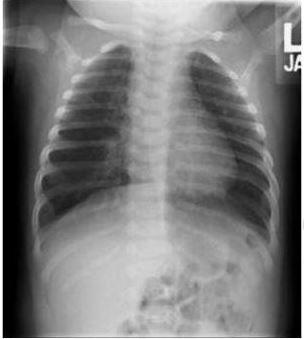

No que se refere à bronquiolite viral aguda (BVA), uma das principais causas de morbidade no primeiro ano de vida, assinale a alternativa correta.
“A Bronquiolite Viral Aguda (BVA) é uma doença inflamatória, que afeta as vias aéreas de pequeno calibre, cursando com in amação aguda, edema e necrose de células epiteliais do trato respiratório. O agente etiológico mais comum é o Vírus Sincicial Respiratório (VSR).” Todos os fatores de risco listados abaixo indicam maior gravidade de BVA pelo VSR, EXCETO
Sobre a bronquiolite viral aguda, assinale a alternativa correta.
Lactente de 4 meses, previamente hígido, foi transferido da Emergência para a Enfermaria com diagnóstico de bronquiolite viral aguda por vírus sincicial respiratório. O exame físico realizado quando da admissão na Enfermaria revelou frequência respiratória de 42 mpm, tiragem subcostal leve e esparsos sibilos polifônicos expiratórios bilaterais. O oxímetro de pulso mostrava saturação de 95% em cateter nasal com uxo de oxigênio a 1 l/min. À radiogra a de tórax, foram constatadas hiperinsu ação bilateral e opacidades intersticiais peri-hilares. Na prescrição da Emergência, constavam dieta por sonda nasogástrica, oxigênio por cateter nasal a 1 l/min e aspiração nasal, se necessário. Que modi cação na prescrição médica deve ser realizada na Enfermaria?
Na bronquiolite viral aguda por vírus sincicial respiratório (VSR), a prevenção da infecção cruzada é uma etapa importante no manejo da doença. Sobre estratégias de controle de infecção, assinalar a alternativa CORRETA:
Um bebê de 6 meses é levado ao hospital por tosse, cansaço para respirar e respiração mais “rápida”. Nega ter tido febre, mas teve, logo antes do quadro atual, coriza leve e um pouco de obstrução nasal. Ao exame físico, o paciente apresenta taquipneia, retrações subcostais discretas e sibilos difusos à ausculta. Com base no diagnóstico provável de bronquiolite viral aguda (BVA), informe se é verdadeiro (V) ou falso (F) o que se a rma a seguir e assinale a alternativa com a sequência correta. ( ) A ausência de febre não é compatível com o diagnóstico de BVA. ( ) O aumento da frequência respiratória é um sinal importante e traduz a resposta do organismo ao acometimento pulmonar pelo agente infeccioso, em uma tentativa de compensar os mecanismos geradores de prejuízo na mecânica pulmonar e na troca gasosa. ( ) Crepitações inspiratórias disseminadas por todos os campos pulmonares não ocorrem na BVA e, se presentes, indicam diagnóstico alternativo. ( ) A radiogra a de tórax pode ser útil nos casos graves, e os principais achados são hiperinsu ação torácica difusa, hipertransparência, retificação do diafragma e até broncograma aéreo com um infiltrado de padrão intersticial. ( ) Na grande maioria dos pacientes, a evolução é benigna, e o processo evolui para a cura sem a necessidade de intervenção.
Lactente de 9 meses vem para consulta com história de febre há 3 dias, tosse seca, recusa alimentar e di culdade respiratória desde o dia anterior. Ao exame prostrado, taquipneico, na ausculta crepitações inspiratórias disseminadas por todos os campos pulmonares, sibilos esparsos. Raio X de tórax com sinais de hiperinsu ação bilateral, reti cação diafragmática e infiltrado de padrão intersticial. No manejo deste paciente analise as assertivas abaixo e a relação entre elas. I. – A terapia com cateter nasal de alto uxo pode reduzir a necessidade de intubação em pacientes com iminente insuficiência respiratória. PORQUE II. – Os ensaios clínicos não conseguiram demonstrar um benefício dos broncodilatadores nesta doença. A respeito destas asserções, assinale a opção correta.
Lactente do sexo masculino, previamente hígido, de três meses de idade, apresentou um pico febril de 38 ºC há três dias e tem evoluído com coriza e tosse. Há um dia, a mãe relata piora na di culdade para mamar e mais cansaço. No exame físico, encontra-se com frequência respiratória de 70 irpm, saturação de 89% em ar ambiente e com sinais de desidratação de algum grau. Assinale a afirmativa correta.
Menino de 4 meses de idade, com desenvolvimento pondero-estatural normal, é levado à emergência pediátrica pelos pais, por apresentar piora do desconforto respiratório e diminuição da alimentação. Referem que ele estava bem até ontem, quando iniciou sintomas respiratórios e uma febre baixa. No exame físico, veri cou-se palidez e cianose perioral, frequência respiratória de 65mrpm, e sibilos por todo o tórax. A gasometria arterial mostrou pH de 7.15, pCO2 de 65mmHg e bicarbonato de 20 mmoI/L. Qual das explicações a seguir melhor corresponde à condição apresentada pela criança?
Lactente de 6 meses foi trazido pela mãe à UBS, tendo sido diagnosticado com bronquiolite viral aguda. Estava afebril, hidratado, mamando bem ao seio materno, sem sinais de esforço respiratório. Não apresentava comorbidades, e as vacinas estavam em dia. A mãe fora diagnosticada com covid-19 por teste PCR (polymerase chain reaction) há 5 dias. O teste PCR para SARS- CoV-2 da criança, realizado no dia seguinte à consulta, também indicou resultado positivo. O estado clínico do paciente permanecia inalterado. Que conduta, dentre as abaixo, deve ser adotada?
Em relação às bronquiolites virais, é correto afirmar:
Um paciente masculino, 2 meses de vida, iniciou há 2 dias com quadro de coriza, febre até 38°C e recusa alimentar. Mãe cita que há algumas horas a respiração cou mais rápida e ofegante. Ao exame físico apresenta-se em regular estado geral, taquicardia, taquipneico, saturando 91% em ar ambiente, leve cianose perilabial, batimentos de asa de nariz, tiragens intercostais e de fúrcula moderadas. Na ausculta pulmonar estertores subcrepitantes intensos difusos. História mórbida pregressa: sem particularidades. História mórbida familiar: sem particularidades. Nasceu a termo, parto normal, sem intercorrências no mesmo e no pré-natal. Diante do quadro clínico, assinale a alternativa que indica corretamente a principal hipótese diagnóstica e a conduta inicial.
Lactente de 4 meses de vida é levado a UPA com história de obstrução nasal, coriza clara e tosse há 4 dias. Há 1 dia houve piora do quadro com tosse mais intensa, di culdade para respirar e respiração rápida. Nega febre, sonolência, gemência ou apneia. Mãe refere que a criança nasceu de termo, por cesariana, e nega doenças anteriores. Negou também sintomáticos respiratórios em casa. Ao exame, o lactente está em bom estado geral, acianótico, hidratado, ativo, FR: 66 ipm e discreta tiragem intercostal. SatO2: 95%. À ausculta pulmonar, apresenta murmúrio vesicular presente e sibilos bilateralmente. O teste RT-PCR de terapêuticas, a melhor para este caso é:
Bebê de três meses de idade foi levado à emergência de um hospital público, por apresentar febre baixa, cansaço, chiado no peito, e di culdade respiratória. A mãe informa que ele iniciou com um resfriado há cinco dias, e notou piora da tosse e surgimento de cansaço que deixou ele com os lábios arroxeados e com di culdade para mamar. Ao exame físico: Apresentava-se gemente, choro intenso, com batimento de asa de nariz, acianótico, com tiragem intercostal e retração subcostal, sibilos expiratórios disseminados. FR: 70 irpm, FC: 155 bpm e T:37,0° C e SaO2=90%. Qual diagnóstico e conduta:
Sobre o tratamento farmacológico e o suporte ventilatório na Bronquiolite Viral Aguda, é incorreto afirmar:
Assinale a alternativa incorreta sobre a farmacologia básica para Bronquiolite Viral Aguda.
São fatores de risco para Bronquiolite Viral Aguda todos os abaixo, exceto.
Assinale a alternativa que apresenta o objetivo no manejo do paciente com Bronquiolite Viral Aguda.
O principal objetivo no manejo do paciente com bronquiolite viral aguda é:
A Radiogra a de tórax de um lactente com diagnóstico de bronquiolite, caracterizada por coriza, tosse, taquipneia, retrações intercostais e sibilância deverá mostrar:
Lactente de 3 meses de idade, previamente hígido, dá entrada no pronto-socorro com história de 2 dias de coriza, tosse e cansaço progressivo. Ao exame, apresenta taquidispneia, com tiragem subdiafragmática e intercostal, ausculta pulmonar com estertores e roncos difusos. Radiogra a de tórax com sinais de hiperinsu ação e aumento de trama vasobrônquica. Foram realizadas 2 inalações com soro siológico e aspiração nasal, mas o desconforto respiratório permanece e a saturometria se mantêm em 88%, mesmo com nebulização de oxigênio. Nesse momento, está indicado
Os principais agentes envolvidos na etiologia da Bronquiolite Virai Aguda são:
Na bronquiolite é correto afirmar:
A Bronquiolite aguda é uma doença que ocorre em lactentes (menores de 2 anos de idade) precedida por infecção virai de vias aéreas superiores e seguida por esforço respiratório, sibilância e/ou crepitação. Com relação a esse diagnóstico marque o principal agente etiológico da doença tanto em países desenvolvidos como em países em desenvolvi menta.
Lactente de 5 meses de idade vem ao pronto-socorro apresentando quadro de broncoespasmo. Qual das seguintes situações é mais frequente causadora desta situação, nesta idade:
Lactente de cinco meses de vida com bronquiolite viral aguda de moderada intensidade, dá entrada no pronto socorro. Qual a abordagem terapêutica está indicada, além da suplementação de oxigênio?
Estamos no Brasil, época de outono. Um menino de 6 meses, que nasceu prematuro de 29 semanas, iniciou há 2 dias com tosse, coriza hialina e febre baixa. Hoje apresenta canseira, di culdade para mamar e chiado no peito. Ao exame físico, observam-se tiragens intercostais e subcostais, expiração prolongada com sibilos difusos. Rx de tórax com hiperinsuflação e hemograma com linfocitose. Qual dos tratamentos poderia ter evitado o quadro descrito?
Uma criança de 6 meses de vida foi encaminhada à unidade de pronto atendimento porque iniciou quadro de tosse, coriza e febre há quatro dias e, há um dia, evoluiu com sibilos respiratórios difusos, dispneia e desconforto respiratório. Ao exame físico, encontra-se em BEG, corada, hidratada; cardio: bulhas rítmicas normofonéticas sem sopros audíveis; pulmonar: murmúrio ventricular presente, simétrico, com sibilos difusos e retração subcostal. Demonstra abdome plano, RHA+, flácido, sem visceromegalias, indolor. Constatam-se otoscopia: membrana timpânica hialina, sem abaulamento, sem hiperemia de conduto, sem outras alterações bilateralmente; oroscopia: sem placas, discreta hiperemia, sem lesões ou outras alterações; pulsos cheios, tempo de enchimento capilar < 3 seg. Ao exame neurológico, apresenta-se em Glasgow 15, ativo, reativo ao exame, com pupilas isocóricas e fotorreagentes, sem sinais focais, sem sinais meníngeos, com fontanela anterior normotensa, pele íntegra e anictérico. Observam-se FC = 140 bpm; FR = 55 irpm; SatO2 = 90% em AA; T = 37,5 ºC. Raios X de tórax indicaram hipertransparência, retificação do diafragma, aumento do diâmetro anterossuperior do tórax. Nesse caso clínico, o quadro sugere
Renan, 2 meses, nascido a termo, previamente hígido, iniciou quadro de coriza hialina, tosse e febre baixa há 2 dias. Tem uma irmã, lsis, de 3 anos que está muito gripada há 5 dias. Gustavo, pai das crianças, preocupado, resolveu levar Renan à Emergência do CHN. Ao examinar, encontramos uma criança pouco reativa, FR= 72irpm, SatO₂= 92% em ar ambiente. Murmúrio vesicular universalmente audível, com sibilos inspiratórios e expiratórios bilaterais. Tiragem subcostal. Otoscopia bilateral e orofaringe sem alterações. É CORRETO AFIRMAR que Renan está com
Lactente de 10 meses vem encaminhado para consulta com pneumopediatra. Mãe relata que o menor foi internado aos 5 meses de vida por quadro de febre, tosse e sibilância, que evoluiu com di culdade respiratória. Necessitou car em UTI por 10 dias em ventilação mecânica e mais 20 dias em oxigênio. Era previamente hígido e mãe nega história de doenças respiratórias na família. Desde a alta, mantém tosse e já apresentou por 2 vezes quadro de sibilância com necessidade de ida ao pronto-socorro. Vem utilizando corticosteroide inalatório há 3 meses, sem melhora aparente. Foi realizado tomogra a de tórax mostrando lesões de atenuação em mosaico bilateralmente. Qual é o diagnóstico mais provável para o caso descrito?
Um lactente de 6 meses de vida é encaminhado ao atendimento médico por apresentar coriza hialina e tosse, com três dias de evolução, piorando nas últimas 24 horas. Na chegada, encontra-se afebril, letárgico, com importantes retrações intercostais e subcostais e sibilos na ausculta pulmonar, sem outros ruídos adventícios. Constatam-se FC = 120 bpm; FR = 75 irpm; e SatO2 = 85% em ar ambiente. A radiogra a torácica mostra-se normal. É o primeiro episódio de sibilância do paciente. Descartou-se infecção por Coronavírus. Considerando esse caso clínico e os conhecimentos médicos correlatos, julgue o item a seguir. No caso descrito, o quadro respiratório é considerado grave.
Um lactente de 6 meses de vida é encaminhado ao atendimento médico por apresentar coriza hialina e tosse, com três dias de evolução, piorando nas últimas 24 horas. Na chegada, encontra-se afebril, letárgico, com importantes retrações intercostais e subcostais e sibilos na ausculta pulmonar, sem outros ruídos adventícios. Constatam-se FC = 120 bpm; FR = 75 irpm; e SatO2 = 85% em ar ambiente. A radiogra a torácica mostra-se normal. É o primeiro episódio de sibilância do paciente. Descartou-se infecção por Coronavírus. Considerando esse caso clínico e os conhecimentos médicos correlatos, julgue o item a seguir. A ausência de febre não exclui o diagnóstico dessa comorbidade.
Um lactente de 6 meses de vida é encaminhado ao atendimento médico por apresentar coriza hialina e tosse, com três dias de evolução, piorando nas últimas 24 horas. Na chegada, encontra-se afebril, letárgico, com importantes retrações intercostais e subcostais e sibilos na ausculta pulmonar, sem outros ruídos adventícios. Constatam-se FC = 120 bpm; FR = 75 irpm; e SatO2 = 85% em ar ambiente. A radiogra a torácica mostra-se normal. É o primeiro episódio de sibilância do paciente. Descartou-se infecção por Coronavírus. Considerando esse caso clínico e os conhecimentos médicos correlatos, julgue o item a seguir. Manter o aporte hídrico adequado é fundamental ao tratamento, estabelecendo-se controle da diurese como critério de avaliação da hidratação do paciente.
Um lactente de 6 meses de vida é encaminhado ao atendimento médico por apresentar coriza hialina e tosse, com três dias de evolução, piorando nas últimas 24 horas. Na chegada, encontra-se afebril, letárgico, com importantes retrações intercostais e subcostais e sibilos na ausculta pulmonar, sem outros ruídos adventícios. Constatam-se FC = 120 bpm; FR = 75 irpm; e SatO2 = 85% em ar ambiente. A radiogra a torácica mostra-se normal. É o primeiro episódio de sibilância do paciente. Descartou-se infecção por Coronavírus. Considerando esse caso clínico e os conhecimentos médicos correlatos, julgue o item a seguir. Diante do exposto, considera-se a hipótese diagnóstica de bronquiolite viral aguda.
Um lactente de 6 meses de vida é encaminhado ao atendimento médico por apresentar coriza hialina e tosse, com três dias de evolução, piorando nas últimas 24 horas. Na chegada, encontra-se afebril, letárgico, com importantes retrações intercostais e subcostais e sibilos na ausculta pulmonar, sem outros ruídos adventícios. Constatam-se FC = 120 bpm; FR = 75 irpm; e SatO2 = 85% em ar ambiente. A radiogra a torácica mostra-se normal. É o primeiro episódio de sibilância do paciente. Descartou-se infecção por Coronavírus. Considerando esse caso clínico e os conhecimentos médicos correlatos, julgue o item a seguir. O diagnóstico da patologia é realizado por meio de espirometria.
Lactente de 3 meses de idade, previamente hígido, foi internado por bronquiolite viral aguda por adenovírus na Unidade de Tratamento Intensivo Pediátrica, necessitando de ventilação mecânica. Prematuro, nascera com 36 semanas e 4 dias (sem necessidade de assistência ventilatória neonatal). Vinha apresentando crescimento adequado, as vacinas estavam em dias e o teste do pezinho foi normal. Tem um tio de 22 anos asmático. Após 5 dias, foi transferido para a Enfermaria, onde alimentava-se bem por via oral e recebia oxigênio por cateter nasal a l/min. Após 4 semanas de evolução, permanecia em oxigenoterapia e apresentava tiragem subcostal leve. Qual a principal hipótese diagnóstica?
Menino, 3m, é internado na Emergência com diagnóstico de bronquiolite viral aguda. bpm, oximetria (ar ambiente)= 90% sibilos difusos. A OFERTA DE OXIGÊNIO DEVE SER ESTABELECIDA POR:
A Bronquiolite viral aguda (BVA) é a infecção do trato respiratório inferior mais comum em lactentes. Em relação a essa doença, assinale a afirmativa correta.
Considerando os critérios de alta hospitalar nas complicações da bronquiolite viral aguda, assinale a alternativa incorreta.
Menino de 5 meses é trazido com história de 3 dias de coriza, tosse, febre baixa e desconforto respiratório progressivo. Hoje está com di culdade de mamar devido à piora do cansaço. Ao exame, está em bom estado geral, afebril no momento, com frequência respiratória de 66 ipm, com tiragem subdiafragmática, saturando 94% em ar ambiente. À ausculta pulmonar apresenta roncos e sibilos difusos. De acordo com a principal hipótese diagnóstica, a conduta inicial é
Neste inverno, Murilo, 6 meses de vida, iniciou com quadro de coriza, tosse e febre baixa por 2 dias. No terceiro dia da doença, apresentou chiado no peito e cou choroso. Sua mãe o levou à Unidade Básica de Saúde mais próxima. Murilo estava alerta, hidratado e acianótico. Respirava tranquilamente, não apresentava batimento de asa de nariz e nem esforço respiratório, com temperatura de 37,8°C, frequência respiratória de 48 mrm e frequência cardíaca de 96 bpm. Na ausculta foram identificados sibilos difusos, bilateralmente. Assinale a alternativa correta, quanto a abordagem deste quadro:
Sobre a bronquiolite, é INCORRETO afirmar:
Lactente, com 2 meses e 10 dias de idade, sexo masculino, previamente hígido, apresenta tosse e desconforto respiratório há 3 dias, precedidos por febre baixa. Ao exame físico, apresenta tiragem intercostal, ausculta com sibilos e estertores subcrepitantes, frequência respiratória de 50 movimentos/minuto e oximetria de 90%. Uma radiogra a de tórax solicitada evidenciou hiperinsu ação e reti cação dos arcos costais, além de uma imagem “em vela de barco” em terço superior à direita. Sobre o quadro desse lactente, assinale a alternativa correta.
Lactente de três meses foi atendida no pronto socorro com história de febre baixa no primeiro dia de doença seguido de coriza, tosse e sibilância há seis dias, tendo sido feito diagnóstico de pneumonia e medicada com amoxicilina. Após 72 horas, na revisão agendada, não apresentou melhora e foi encaminhada para internação. Exame físico: bom estado geral, pulsos amplos, hidratado, acianótica, tiragem subcostal, batimento de asa de nariz e FR: 50 irpm. Radiogra a de tórax: reti cação de arcos costais com hiperexpansão do tórax com 10 arcos costais no campo pulmonar. Qual é o diagnóstico mais provável?
Lactente de 4 meses é internada na enfermaria de pediatria com quadro de febre (38ºC), tosse e taquidispneia importante com sibilância. Está sendo tratada com dias, evolui com piora clínica importante, necessitando de intubação orotraqueal para suporte ventilatório e transferência para UTI pediátrica. Ao exame do aparelho respiratório, apresenta estertores crepitantes e sibilos difusos. A radiogra a de tórax evidencia in ltrado em lobo médio direito que apaga a silhueta cardíaca. Foi instituída antibioticoterapia, além de intensi cação da terapêutica com optou-se pela realização de tomografia computadorizada de tórax, que evidenciou bronquiectasias, perfusão em mosaico e atenuação vascular. O diagnóstico respiratório mais provável é:
Criança, 3 meses de vida, trazida por seus pais ao pronto-socorro com história, há 4 dias, de cansaço progressivo às mamadas. Contam 1 episódio febril há 5 dias e coriza nasal, piorando hoje. Notaram que trocaram menos vezes as fraldas hoje e se queixam que a criança está mais sonolenta. Negam antecedentes pessoais. Criança de termo, sendo a primeira vez que vem ao hospital após nascimento. Nega alergias e sintomas gastrointestinais. Ao exame clínico: acordado, com coriza, taquidispneico, com tempo expiratório aumentado, sibilos difusos na ausculta pulmonar e frequência respiratória = 70 movimentos/minuto, saturação de O₂ = 88% em ar ambiente. Taquicárdico, com pulsoos centrais e periféricos cheios, com tempo de enchimento capilar de 2 segundos. Qual deve ser a conduta para esta criança?
Lactente de 7 meses vem apresentando tosse, coriza hialina, febre baixa, e irritabilidade há 3 dias. Nas últimas 12 horas, evoluiu com piora da tosse e passou a apresentar rouquidão, conjuntivite e taquipnéia. Ao exame físico, mostrava-se irritada, afebril, acianótica, FR= 60ipm, na ausculta pulmonar sibilos inspiratórios e expiratórios. Hemograma com Ht= 36%, Hb= 12g/dL, leucócitos= 20.000 (6% bastões, 30% segmentados, 54% linfócitos, 4% eosinó los e 6% monócitos), plaquetas= 123.000. Nessas condições clínicas, a hipótese diagnóstica e a principal conduta a ser tomada são, respectivamente:
O agente mais comumente envolvido na etiologia da bronquiolite viral aguda é:
Lactente de 5 meses de idade, previamente hígido e nascido a termo. Há 3 dias com coriza, tosse e febre. Nas últimas 18 horas evoluiu com piora da tosse, recusa alimentar e desconforto respiratório. Foi trazido pela mãe ao pronto atendimento em: REG, FC = 142 bpm; FR = 72 mrm; T = 37,4 graus; saturação de oxigênio = 90% em ar ambiente. Tórax estava hiperinsu ado com tiragens intercostal e subcostal. Ausculta pulmonar: sibilos e roncos bilaterais. Sobre o caso assima, analise as assertivas abaixo: I. O lactente encontra-se taquipneico, sendo a frequência respiratória normal para esta idade de até 60 mrm. II. O diagnóstico mais provável é bronquiolite viral aguda e o principal agente etiológico é o Vírus Sincicial Respiratório. III. Os sinais e sintomas que indicam a internação para este lactente são: a presença de tiragens, recusa alimentar e saturação baixa. IV. O tratamento a ser instituído é suportivo, com hidratação, associado à oxigenioterapia e nebulizações com broncodilatador. V. Dentre as medidas preventivas para o caso encontra-se: lavagem das mãos, evitar aglomerados e administrar a vacina anti-pneumocócica. Assinale a alternativa correta:
O agente mais frequente nos casos de bronquiolite dos lactentes é:
Indique a opção incorreta em relação à bronquiolite viral aguda (BVA).
A bronquiolite é a infecção do trato respiratório inferior mais comum em crianças pequenas. A doença resulta da obstrução inflamatória das pequenas vias aéreas e possui gravidade variável. Nas bronquiolites é correto afirmar:
Os principais agentes envolvidos na etiologia da BVA são:
Considere que um lactente de 6 meses de vida iniciou com quadro de tosse e coriza por quatro dias, evoluiu com cansaço, persistência da tosse seca e “chieira”. Exame físico: bom estado geral, corado e hidratado; FR: 60 rpm, murmúrio vesicular com crepitações e retração de fúrcula leve; saturação de oxigênio: 95% em ar ambiente. Ausência de história de asma na família. Nega sibilância prévia. Em relação a esse caso, assinale alternativa correta.
São preditores de bronquiolite grave: I- Baixo peso ao nascer; II- Presença de fumo passivo; III- Atelectasia ao raio X de tórax. Está(ão) correta(s) a(s) afirmativa(s):
A bronquiolite viral aguda é uma doença de elevada morbidade em todo o mundo, principalmente nos meses de inverno, e constitui a infecção respiratória aguda mais comum em lactentes com idade inferior a dois anos, com incidência maior naqueles com idade inferior a seis meses. Sobre a bronquiolite viral aguda marque a opção INCORRETA:
Uma das causas mais frequentes de hospitalização de crianças de até dois anos por doença pulmonar é:
Lactente de 6 meses previamente hígido foi levado à UPA com história de febre aferida de 37,8°C por 2 dias que posteriormente evoluiu com coriza hialina e tosse seca. Ao exame físico: regular estado geral, corado, hidratado, TAX:37°C. Ausculta cardíaca sem anormalidades. FC: 130 bpm. Ausculta pulmonar com sibilos e crepitações inspiratórias difusas, presença de tiragem subcostal e intercostal, FR: 75 irpm. Saturação O2: 88% em ar ambiente. Radiogra a de tórax apresentava infiltrado intersticial difuso e hiperinsuflação torácica difusa. Qual o provável diagnóstico?
A bronquiolite é uma infecção viral aguda do trato respiratório inferior que afeta lactentes < 24 meses e caracteriza-se por disfunção respiratória, respiração ruidosa e crepitação. Em relação a bronquiolite, é INCORRETO afirmar que:
Com relação ao VSR, marque a afirmação correta.
A bronquiolite viral aguda é a infecção do trato respiratório inferior mais comum em crianças pequenas. Seu principal agente etiológico é:
Infecções agudas em vias áreas superiores que ocorrem em lactentes têm chance de alcançarem as vias inferiores, devido a replicação viral no epitélio respiratório. A síndrome clínica viral mais frequente no outono é bronquiolite cujo achados semiológicos mais frequentes são sibilos bilaterais somados a:
Criança de 6 meses é encaminhada para internação com hipótese diagnóstica de bronquiolite. Tem história de início há 3 dias com febre, tosse seca e coriza hialina. Há 1 dia com canseira e chiado no peito, di cultando as mamadas. Ausculta com roncos de transmissão alta e estertores crepitantes bilaterais nas bases. Hemograma: Hb 12, Ht 36, GB 9.500 (Bast 2, Seg 34, Eos 2, Linf 60, Mo 2). Não dispõe de serviço de radiologia. Qual é a hipótese diagnóstica?
Uma lactente com dois meses de vida, sem antecedentes mórbidos, apresenta coriza e tosse há cinco dias, “chiado” há dois dias, com piora progressiva, e um pico febril de 37,9 °C no terceiro dia do quadro. Chegou ao setor de emergência pediátrica hidratada, taquidispneica, acianótica, com tempo de enchimento capilar de dois segundos, frequência respiratória de 64 ipm e saturação de oxigênio de 90% em ar ambiente. Apresenta, também, tiragem discreta subcostal e intercostal, além de sibilância bilateral e tempo expiratório prolongado. A mãe refere di culdade da criança em se alimentar devido à dispneia. Além de internação e oxigenoterapia, a melhor alternativa nesse caso hipotético seria
Em relação ao tratamento da bronquiolite viral aguda em lactentes, é correto afirmar:
Menina de 4 meses de idade foi levada ao pronto-socorro devido a quadro de cansaço hoje. Há 3 dias apresenta tosse, coriza e febre não aferida. Nasceu de parto normal, com idade gestacional de 35 semanas e peso ao nascer de 2.650 g. Teve alta do berçário com 3 dias de vida e está em aleitamento materno exclusivo. No exame físco, encontra-se em regular estado geral, afebril, ativa e reativa, com FR: 70 ipm, FC: 160 bpm e tempo de enchimento capilar: 2 segundos. Fontanela plana e normotensa. Ausculta pulmonar com estertores grossos, roncos e sibilos difusos. Presença de tiragem subcostal e intercostal. Saturação de oxigênio em ar ambiente: 89%. Ausculta cardíaca normal. Fígado palpável a 3 cm do rebordo costal direito e baço palpável no rebordo costal esquerdo. Sem outras alterações ou queixas. Pesquisa de VSR positiva. A melhor conduta neste momento, dentre as opções abaixo, é:
O quadro clínico de bronquiolite viral aguda é bastante comum nos pacientes pediátricos e todas as a rmativas abaixo são verdadeiras, EXCETO:
Criança de 8 meses, previamente hígida, há 2 dias com tosse, coriza e febre (38°C), é levada ao pronto atendimento com história de, neste dia, estar apresentando cansaço e piora progressiva do desconforto respiratório, o que está di cultando as mamadas. Ao exame físico, está taquidispneica, com frequência respiratória de 56 ipm, presença de tiragem intercostal e subdiafragmática. Ausculta pulmonar com roncos e sibilos difusos. Restante do exame físico sem alterações. Saturação de 91% em ar ambiente. De acordo com a príncipal hipótese diagnóstica, a conduta inicial deve ser
As a rmativas seguintes se referem à bronquiolite viral aguda (BVA). Coloque (V) para as a rmativas verdadeiras e (F) para as afirmativas falsas. ( ) Há evidências de que BVA se associa à sibilância recorrente e asma em longo prazo. ( ) O diagnóstico de BVA requer a confirmação laboratorial, Raio x do tórax e, se viável, detecção do vírus por reação de cadeia de polimerase (PCR). ( ) Em face de asma representar o principal diagnóstico diferencial de BVA, para todas as crianças hospitalizadas com BVA, estão indicados corticoides sistêmicos e beta2 adrenérgicos de ação rápida por via inalatória. ( ) Os seguintes fatores: di culdade de ingerir líquidos, frequência respiratória acima de 60 irpm, cianose, apneia e saturação transcutânea de oxigênio (Sat0₂) < 94%, isoladas ou combinadas, são indicativos de BVA grave e por conseguinte de internação hospitalar. ( ) Segundo o Ministério da Saúde do Brasil, o anticorpo monoclonal palizumabe é indicado para uso em recém- nascidos prematuros menores de 28 semanas de idade gestacional durante o primeiro ano de nascimento com início no período de pré-sazonalidade de infecção pelo vírus sincicial respiratório (VSR). A sequência correta é:
A bronquiolite viral aguda é a causa mais comum de sibilância associada a quadro de vias aéreas superiores. A respeito dessa infecção, assinale a resposta verdadeira:
Em relação ao uso de anticorpo monoclonal específico contra o VSR (palivizumabe) em recém nascidos prematuros, assinale a opção incorreta
Sobre os achados clínicos da bronquiolite viral aguda (BVA), assinale a alternativa CORRETA:
Assinale a alternativa CORRETA:
As radiogra as de tórax podem ser úteis nos casos graves de bronquiolite viral aguda, quando ocorre piora súbita do quadro respiratório ou quando existem doenças cardíacas ou pulmonares prévias. Os principais achados da radiogra a de tórax na bronquiolite viral aguda são todos os abaixo, EXCETO:
Criança de 6 meses de idade é trazida pela mãe a emergência devido à di culdade para respirar. Iniciou há cerca de 3 dias quadro de coriza e tosse. Há 24 horas refere 02 episódios de febre não aferida. Desenvolvimento normal. Há cerca de 30 dias começou a frequentar a creche. No momento do exame, a criança encontra-se afebril, hipoativa e sonolenta. Taquipneico com retração intercostal e subdiafragmática associado a batimento de asa do nariz. Na ausculta observam-se sibilos difusos. Restante do exame físico sem alterações. Sinais vitais: FC = 150 bpm; FR = 65 irpm; Tax = 37,2°C; Sat = 92%. Marque a alternativa com o diagnóstico e agente etiológico mais provável:
Paciente com três meses é admitido pela segunda vez na unidade de emergência por febrícula, tosse persistente e taquipneia. Ao exame físico, verifica-se a presença de sibilos, estertores grosseiros difusos e tiragens subcostais. Considerando-se a principal hipótese para esse quadro clínico, é correto afirmar que:
Lactente de cinco meses de vida é levado à emergência, no início do mês de junho, com relato de rinorreia, cansaço, tosse, coriza e febre baixa, há 3 dias. Mãe refere que uma irmã de 7 anos estava muito resfriada, na mesma época da criança. Exame físico: febril (37,6°C), ativo e reativo ao manuseio; FR: 60ipm; Saturação de oxigênio periférica de 95%. FC: 120 bpm. AP: MV universalmente audível com sibilos difusos. Radiogra a de tórax: hipertransparência pulmonar difusa, aumento do volume torácico e retificação do diafragma. A principal hipótese diagnóstica é:
Lactente com 6 meses de idade é levado à UPA com história de di culdade respiratória há menos de 6 horas. A criança estava com tosse discreta e coriza há dois dias e vinha recebendo sintomáticos. Não apresenta história patológica pregressa nem intercorrências perinatais. O exame físico mostra uma criança afebril, eutrófica, hidratada e corada. Apresenta dispneia leve com frequência respiratória de 52 incursões por minuto. Pulmões com sibilos difusos e aumento do tempo expiratório. Bulhas normais sem sopros. Abdome globoso, ácido e com fígado a 1 cm do rebordo costal direito. Radiogra a de tórax com hiperinsu ação pulmonar bilateral e in ltrado intersticial discreto. Hemograma inocente com PCR normal. Gasometria arterial: PH = 7,40; PO2 = 56; PCO2 = 37; BE = - 0,2; HCO3 = 24; SaO2 = 90%. O tratamento inicial indicado para este paciente é
Um lactente com 4 meses de idade é examinado no setor de emergência com secreção nasal abundante, tosse, febre, sibilos e di culdade respiratória. A oximetria de pulso ao ar ambiente mostra saturação de 86%. O paciente é internado para observação. Qual o principal agente etiológico e qual dos tratamentos seguintes tem maior probabilidade de ser bené co nesse paciente, respectivamente: (BURNS, D. A. R.; CAMPOS JÚNIOR, D.; SILVA, L. R., BORGES, W. G. Tratado de Pediatria – Sociedade Brasileira de Pediatria - 2 vols - 4ª edição. SP: Manole, 2017.).
Revisar: possível letra faltando em enunciado
Lactente de 2 meses de vida, previamente hígido, apresenta quadro de tosse associada a desconforto respiratório há 2 dias, precedida por febre baixa. Ao exame físico, lactente em bom esta geral, presença de tiragem intercostal e subcostal, ausculta pulmonar com sibilos expiratórios, com 50 incursões respiratórias por minuto. Solicitado RX de tórax que evidenciou hiperisu ação e reti cação de arcos costais, com imagem em vela de barco em ápse direito. Em relação ao caso descrito, é correto afirmar que:
Lactente de 2 meses de vida, previamente hígido, apresenta quadro de tosse associada a desconforto respiratório há 2 dias, precedida por febre baixa. Ao exame físico, lactente em bom estado geral, presença de tiragem intercostal e subcostal, ausculta pulmonar com sibilos expiratórios, com 50 incursões respiratórias por minuto. Solicitado RX de tórax que evidenciou hiperinsu ação e reti cação de arcos costais, com imagem em vela de barco em ápse direito. Em relação ao caso descrito, é correto afirmar que:
Mãe traz lho de 8 meses com queixa de tosse iniciada há 2 dias, evoluindo com febre baixa aferida e chiado. Nega outras queixas. Vacinas atualizadas. Ao exame físico o paciente apresenta bom estado geral, febril, temperatura axilar 37,2°C, sem sinais de esforço respiratório e discretos sibilos. Sobre o caso marque a alternativa correta:
O diagnóstico de bronquiolite viral aguda se baseia essencialmente no:
Em uma emergência, um pediatra de plantão atendeu um menino de 2 meses e meio de idade, que apresentava gemência, retração torácica, FR=70 irpm, e saturação <92% em ar ambiente. Considerando esse caso clínico, julgue o item subsecutivo. O desconforto respiratório com SaO2<92% e a faixa etária menor que 3 meses de idade são critérios para internação desse paciente.
Em uma emergência, um pediatra de plantão atendeu um menino de 2 meses e meio de idade, que apresentava gemência, retração torácica, FR=70 irpm, e saturação <92% em ar ambiente. Considerando esse caso clínico, julgue o item subsecutivo. Em caso de internação, está indicada a prescrição de corticoide sistêmico e nebulização com adrenalina a cada 4 horas.
Em uma emergência, um pediatra de plantão atendeu um menino de 2 meses e meio de idade, que apresentava gemência, retração torácica, FR=70 irpm, e saturação <92% em ar ambiente. Considerando esse caso clínico, julgue o item subsecutivo. O menino apresentava bronquiolite, uma doença que é mais prevalente em crianças menores de dois anos de idade, mas com maior frequência e gravidade em menores de um ano, especialmente no primeiro semestre de vida.
Você atende em pronto-socorro uma criança de 3 meses de idade, com história de coriza, tosse e febre há 3 dias, que vem piorando progressivamente, com desconforto respiratório há 2 dias. Ao exame físico: regular estado geral, taquidispneica, com frequência respiratória de 72 movimentos por minuto, sibilos generalizados e saturação periférica de O2 = 90%. A radiografia de tórax mostra hiperinsuflação pulmonar. Qual a conduta adequada ao caso?
Um lactente de 8 meses apresenta história, há 2 dias, de rinorreia hialina e febre, com 2 picos de 38,5 °C por dia. Há 12 horas com tosse seca e di culdade para respirar, passando a aceitar só a dieta líquida oferecida e o leite materno, mas com di culdade. Trata-se de lactente hígido, eutró co, com vacinação em dia. Deu entrada no prontosocorro com temperatura de 37,5 °C, FR = 55 ipm, FC = 110 bpm, Sat 02=90%, em regular estado geral, com batimento de aletas nasais, sonolento, com tosse seca recorrente. Hiperemia de mucosas e rinorreia mucoide, boca com pouca saliva. Tórax: retrações sub e intercostais, com murmúrio vesicular rude e sibilos bilaterais e com roncos difusos. Abdome globoso, fígado a 3 cm do rebordo costal e baço não palpável. Ausência de sinais meníngeos. Pulsos presentes e palpáveis nos 4 membros, com tempo de enchimento capilar menor de 3 segundos. O médico, imediatamente, indica lavagem nasal com solução siológica e aspiração cuidadosa das narinas. A saturação após é de 93%, então ele prescreve a monitorização para suporte de oxigênio. Com base no provável diagnóstico, qual é a conduta terapêutica mais adequada?
Revisar: possível letra faltando em enunciado
Lactante com 4 meses de vida, iniciou quadro de febre de 38° C há 3 dias, acompanhada de tosse e dispnéia, com di culdade para sugar o seio materno. Foi levado ao Pronto Socorro devido à piora do cansaço. Ao exame clínico encontra-se corado, hidratado, acianótico, com boa perfusão capilar periférica, porém apresentando triagem subcostal com taquidispinéia moderada e queda da saturação de oxigênio. Ausculta pulmonar revela roncos e estertores subcrepitantes e sibilos difusos, com tempo de expiração prolongado. O diagnóstico mais provável e o agente etiológico mais freqüente são, respectivamente:
São fatores de risco que predispõe para uma evolução mais grave de Bronquiolite Viral Aguda, EXCETO:
São fatores de risco para aquisição de Bronquiolite Viral Aguda, EXCETO:
Em relação à bronquiolite aguda viral em crianças, identifique como Verdadeiras (V) ou Falsas (F) as seguintes afirmativas: ( ) O vírus sincicial respiratório é o agente etiológico mais prevalente. ( ) Broncodilatadores devem ser usados no pronto atendimento, para diagnóstico diferencial de asma e diminuição da necessidade de internação. ( ) Lactentes atendidos no pronto atendimento que apresentem saturação arterial de oxigênio abaixo de 95% devem ser internados, pois a alta hospitalar com saturação abaixo desse nível aumenta morbimortalidade dos casos. ( ) Nos pacientes com crises moderadas e graves, a fisioterapia respiratória diminui o tempo de internação. Assinale a alternativa que apresenta a sequência CORRETA, de cima para baixo.
Um lactente com diagnóstico de bronquiolite viral aguda apresenta esforço respiratório moderado, saturação de oxigênio de 89%, síbilos bilaterais e crepitações nas bases pulmonares. Qual destas opções é o tratamento comprovadamente mais eficaz?
Qual das alterações no estudo radiológico do tórax é menos encontrada entre os lactantes com suspeita de bronquiolite?
A bronquiolite viral aguda (BVA) é a infecção do trato respiratório inferior mais comum em crianças pequenas. Em relação a BVA, marque a alternativa CORRETA:
Em relação a bronquiolite viral aguda, podemos dizer que:
Paciente de 9 meses de idade, sexo masculino, foi trazido ao pronto-socorro com queixa de tosse, coriza e chiado há 3 dias, com piora há um dia. Mãe refere baixa aceitação alimentar associada ao quadro. Nascido de parto normal, a termo, sem intercorrências neonatais. Exame físico: regular estado geral; afebril; corado; desidratado de algum grau. Frequência cardíaca = 140 bpm; frequência respiratória = 70 irpm; saturação em ar ambiente = 89%. Coração: bulhas rítmicas normofonéticas, sem sopros. Pulmões: murmúrio vesicular presente, bilateralmente, com sibilos difusos, retração subdiafragmática e de fúrcula. Foi realizada radiografia de tórax, reproduzida a seguir: (VER IMAGEM) Qual é a principal hipótese diagnóstica e a conduta adequada para o caso? Respostas: 1 12 23 34 45 56 67 78 89 100
